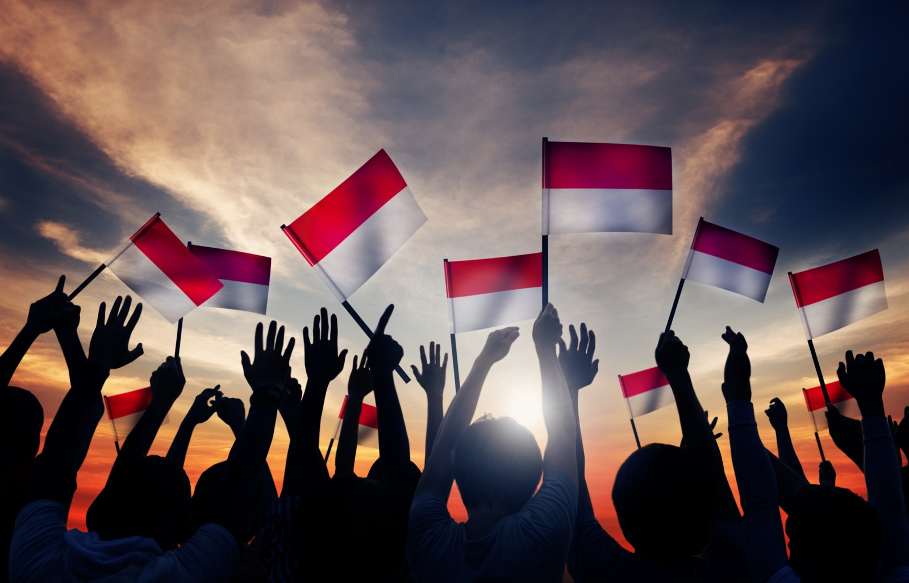
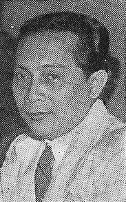
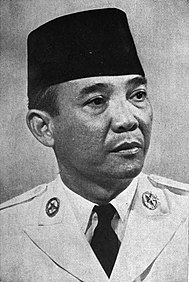
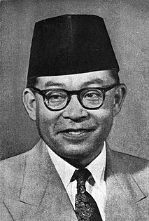

Tokoh-Tokoh Penting dalam Sejarah Demokrasi Indonesia
Demokrasi di Indonesia memiliki sejarah dan perkembangan yang kompleks mulai dari makna dan konsep-konsep demokrasi menurut para tokoh dan founding fathers Kemerdekaan Indonesia. Selain itu juga, demokrasi dimulai saat Kemerdekaan Indonesia, berdirinya Republik Indonesia Serikat, kemunculan fase kediktatoran Soekarno dalam Orde Lama dan Soeharto dalam Orde Baru, hingga proses konsolidasi demokrasi pasca Reformasi 1998 hingga saat ini.
 
Soekarno  
Demokrasi Menurut Pandangan Para Pendiri Bangsa Indonesia
Setelah Indonesia merdeka pada 17 Agustus 1945, pemimpin Indonesia yaitu Soekarno dan Mohammad Hatta telah mendeklarasikan Indonesia Merdeka sebagai sebuah negara yang demokratis. Kemerdekaan Indonesia ini merupakan kemerdekaan yang diperuntukkan bagi rakyat Indonesia sendiri yang terbukti dari kalimat terakhirnya dikatakan dalam Teks Proklamasi 17 Agustus 1945 adalah “atas nama bangsa Indonesia”.
Meskipun sudah mencapai tahap kemerdekaan bangsa, tetapi setiap tokoh pergerakan dan pelopor kemerdekaan Indonesia memiliki konsep demokrasinya masing-masing yang berbeda-beda. Kebanyakan dari mereka berusaha menengahi dualisme penafsiran demokrasi dari Negara Barat yang liberalis sedangkan kapitalis dengan Negara Timur yang komunis, terutama dalam merumuskan tentang kebebasan politik yang diadopsi dari demokrasi Barat dan kemerataan ekonomi yang ditiru dari demokrasi Timur. Namun, terkadang beberapa tokoh kemudian memiliki kecenderungan masing-masing, entah itu kecenderungan pada Barat ataupun Timur, yang kemudian menjadi ciri khas dari perkembangan demokrasi di Indonesia.
Soetan Sjahrir
Soetan Sjahrir sebagai Perdana Menteri Pertama Republik Indonesia memiliki konsepsi sendiri tentang demokrasi, namun yang membedakannya adalah Sjahrir tidak mengutuk habis-habisan demokrasi Barat seperti yang dilakukan Soekarno dan Hatta. Sjahrir lebih membenci fasisme dan ketimbang kapitalisme Barat, oleh karena itu tak mengherankan bila Sjahrir lebih suka melakukan dialog dengan pihak Sekutu Barat, seperti Amerika Serikat, Britania Raya, dan Belanda.
Soekarno adalah presiden pertama Indonesia yang memberi banyak jasa terhadap negara tanah air kita. Menurutnya demokrasi di Indonesia adalah demokrasi yang lahir dari kehendak memperjuangkan kemerdekaan. Artinya adalah demokrasi Indonesia menurut Soekarno meletakan embrionya pada perlawanan terhadap imperialisme dan kolonialisme, hal itu ditulis oleh Soekarno dalam bukunya, Indonesia Menggugat dan Di Bawah Bendera Revolusi, yang secara eksplisit terinspirasi oleh pergerakan kemerdekaan yang dilakukan di pelbagai belahan dunia, dari perjuangan seorang Muhammad, Yesus Kristus, William de Oranje, Mahatma Gandhi, Mustafa Kemal Attaturk, dan tokoh-tokoh kemerdekaan bangsa-bangsa di seluruh dunia.
Menurut beliau, demokrasi merupakan suatu "pemerintahan rakyat". Lebih lanjut lagi, bagi Soekarno, demokrasi adalah suatu cara dalam membentuk pemerintahan yang memberikan hak kepada rakayat untuk ikut serta dalam proses pemerintahan. Namun, demokrasi yang diinginkan dan dikonsepsikan oleh Soekarno tidak ingin meniru demokrasi modern yang lahir dari Revolusi Prancis, karena menurut Soekarno, demokrasi yang dihasilkan oleh Revolusi Prancis, demokrasi yang hanya menguntungkan kaum borjuis dan menjadi tempat tumbuhnya kapitalisme. Oleh karena itu, kemudian Soekarno mengkonsepsikan sendiri demokrasi yang menurutnya cocok untuk Indonesia.
Mohammad Hatta
Wakil Presiden Pertama Indonesia yaitu Mohammad Hatta adalah salah satu tokoh pergerakan yang menjadi pengeritik utama demokrasi liberal Barat. Kritik Hatta terhadap demokrasi Barat yang dimaksud adalah demokrasi dalam kehidupan politik, atau liberalisme secara umum. Pendapatnya terhadap demokrasi barat adalah “Jadinya, demokrasi Barat yang dilahirkan oleh Revolusi Prancis tiada membawa kemerdekaan rakyat yang sebenarnya, melainkan menimbulkan kekuasaan kapitalisme. Sebab itu demokrasi politik saja tidak cukup untuk mencapai demokrasi yang sebenarnya, yaitu Kedaulatan Rakyat. Haruslah ada pula demokrasi ekonomi."